Vehicle Expenses Automated — full illustrated user manual (HTML for browsers). Edit source: docs/i18n/tr/user-manual.md; regenerate with ./scripts/render-user-manual.sh.
Kaynağı düzenleyin (Markdown). Tarayıcılar ve uygulama içi okuyucu oluşturulan HTML'yi açar:
- Web:docs/user-manual.html(./scripts/render-user-manual.shile yeniden oluşturun)
- Uygulama: Yardım / Hakkında → tam kılavuz (birlikte verilen HTML + ekran görüntüleri)Son kullanıcıları ham ".md" URL'lerine yönlendirmeyin; tarayıcılar yalnızca düz metin gösterir.
Bulut hesaplarınız altında isteğe bağlı çoklu cihaz senkronizasyonu ve yedeklemeyle, yakıt dolumları ve araç masrafları için ilk kamera takibi.
Bu tam kılavuzdur (ekran görüntüleri + her adım). Telefondaki Menü → Yardım daha kısa bir başlangıç kılavuzudur.
Burada ele alınmayan konular: Eski Resimleri İçe Aktarma, Hizalama Deneyi ve Pompa Deneyi (geliştirici / gelişmiş araçlar).
Bunlar ana ekranlarda görünür. Bunları bilmek avlanmanın büyük kısmını kurtarır.
| Nerede | Simge / kontrol | Ne işe yarar |
|---|---|---|
| Üst çubuk | ☰ Menü (hamburger) | Gezinme çekmecesini açar |
| Üst çubuk | ⓘ (sayfa yardımı) | Geçerli sayfa için kısa yardım (varsa menünün yanında) |
| Üst çubuk | ?N (sarı) |
Bekleyen içe aktarma inceleme soruları — İçe aktarma incelemesini açar |
| Üst çubuk | ! (kırmızı) | Yakın zamanda bir e-tablo veya fotoğraf hedefi başarısız oldu — düzeltmek için Senkronizasyon'u açın |
| Üst çubuk | ☰ + ← | Çocukları rapor et ve Giderler listesi menü ve arka kısmı birlikte gösterir; Rapor merkezi yalnızca menüden oluşur |
| Ayarlar / yakıt düzenleme | ← | Geri (ayarlar elektronik tablo/fotoğraf ve yakıt düzenleme geriye odaklı kalır) |
| Hızlı Doldur | Beyaz daire (deklanşör) | OCR için kilometre sayacını veya pompa ekranını yakalayın |
| Hızlı Doldur | Disk / Kaydet | Doldurmayı kaydedin (bir araca ve odo / hacim / maliyetten en az birine ihtiyaç duyar) |
| Hızlı Doldur | ↕ oklar (mod anahtarı) | kilometre sayacı modu ile pompa (maliyet/hacim) modu arasında geçiş yapın. Yeşil kenarlık etkin alan grubunu vurgular |
| Hızlı Doldur | ↔ okları (maliyet ve hacim arasında) | OCR yanlış alanlara koyarsa maliyet ve hacmi değiştirin |
| Hızlı Doldur | 1x yakınlaştır /… | Lens desteklediğinde kamera yakınlaştırma oranları |
| Hızlı Doldurma (yakaladıktan sonra) | Yenile ana düğmede | Önizlemeyi atın ve canlı kameraya dönün |
| Hızlı Doldurma (işlenirken) | X ana düğmede | Devam eden yakalamayı/OCR'yi iptal et |
| Gider | Kaydet | Masraflardan tasarruf edin |
| Gider | Deklanşör dairesi | Makbuz fotoğrafı çekin |
| Gider | Galeri | Kitaplıktan bir makbuz resmi seçin |
| Gider | Yeniden çek | Mevcut makbuz fotoğrafını silin ve tekrar çekim yapın |
| Gider / Araç Yönetimi | + / − FAB'ler | Fotoğraf önizlemesini yakınlaştırın |
| Yer işaretleri iletişim kutusu | OCR'yi düzenle | Motorların gözden kaçırdığı önemli nokta metnini düzeltin veya ekleyin |
| Elektronik Tablo / Fotoğraf formları | 🔍 Ara | Bir sayfa veya klasör için Google Drive'a göz atın (oturum açtıktan sonra) |
Maliyet alanlarındaki para birimi simgelerine ve hacim alanlarındaki G/L'ye dokunulabilir: söz konusu giriş için para birimini veya galon ve litreyi değiştirmek için küçük bir menü açın.
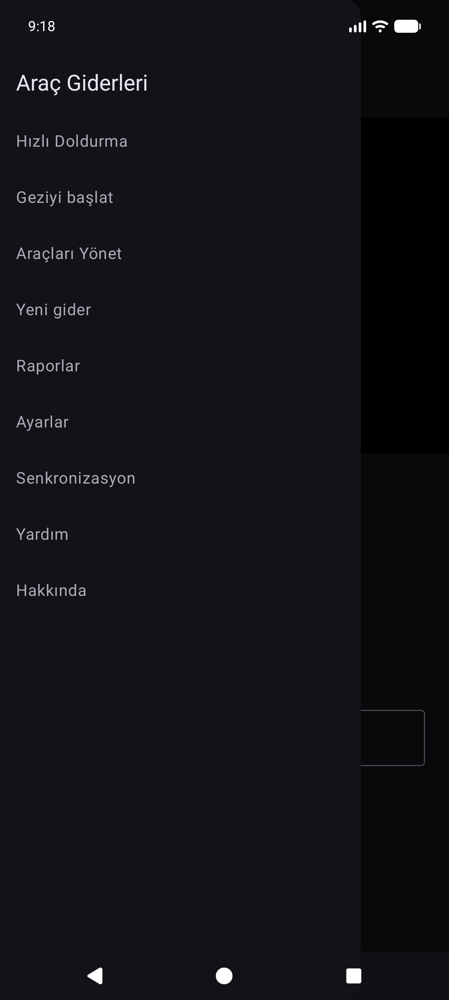
Ana çekmece: Hızlı Doldurma · Yolculuğu başlat · Araçları Yönet · Yeni gider · Raporlar · Ayarlar · Senkronizasyon · Yardım · Hakkında.
Deneme çekmecesi (Ayarlar → Deney ekranlarını göster): Hizalama Deneyi · Pompa Deneyi · Eski Resimleri İçe Aktar.
Raporlar merkezi aracılığıyla (ana çekmece değil): Gider listesi · Geçmişi doldur.
OCR ve otomatik araç eşleştirme, her aracı bir referans kontrol paneli fotoğrafı ile kaydettikten, kilometre sayacını kırptıktan ve Discovery'yi çalıştırdıktan sonra en iyi şekilde çalışır, böylece uygulama o çizgi için önemli metinleri depolar. (Yer işaretlerinin nasıl seçildiği ve eşleştirildiği daha sonraki bir güncellemede daha ayrıntılı olarak belgelenecektir.)
Menü → Araçları Yönet. Bir araç seçin (veya Yeni Araç Ekle).
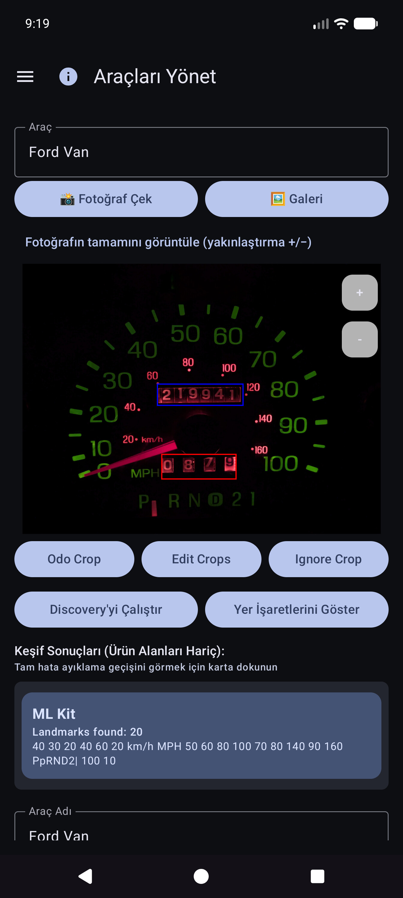
Yer İşaretlerini Göster'in ardından listeyi kaydırın ve değerleri düzeltin. Motorlar bazen küçük rakamları kaçırır (örneğin, kümenin sağ alt köşesindeki 60 saati). Araç kimliğinin güvenilir kalması için OCR'yi düzenle'yi kullanarak bunları ekleyin veya düzeltin.
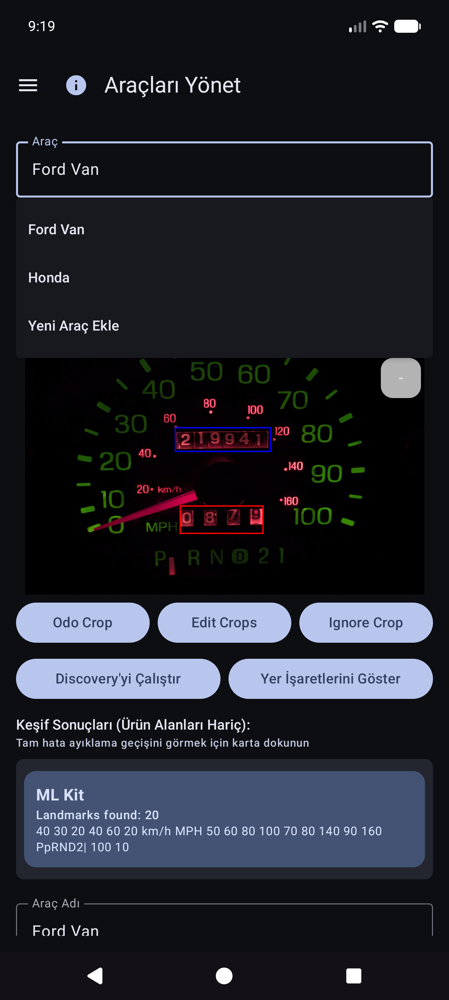
Uygulamayı, bir araç seçip Hızlı Doldurma'ya kilometre sayacı, hacim ve maliyeti yazarak kullanmaya devam edebilirsiniz — OCR her alan için isteğe bağlıdır. Galeriyi içe aktarma, uygulama içinde çekim yapmamayı tercih ettiğinizde referans çizgi fotoğrafı için çalışır.
İpucu: E-tablo senkronizasyonundan sonra araç tanımları (ekinler, yer işaretleri) yerel veritabanında yayınlanır; bunları kullanmak için Hızlı Doldurma için Araçları Yönet'i yeniden açmanız gerekmez.
Uygulama, birden fazla telefon veya tabletin aynı filo verilerini paylaşabileceği şekilde tasarlanmıştır ve böylece verilerinizin ve fotoğraflarınızın bir kopyasını cihazdan saklayabilirsiniz. Bu, sizin hesaplarınız veya kendinizde barındırılan sunucularınız altında yapılandırdığınız sizin hedeflerle yapılır; diğer insanların görebileceği, şirket tarafından işletilen bir "Araç Giderleri bulutu" ile değil.
| tür | Neleri saklıyor | Tipik kullanım |
|---|---|---|
| E-tablo / tablo senkronizasyonu | Araçlar, yakıt dolumları, giderler (sıralar ve sekmeler) | Çoklu cihaz birleştirme + yapılandırılmış yedekleme |
| Fotoğraf yedekleme | İkili resimler (tire/pompa/makbuz/referans fotoğrafları) | Fotoğraf yedekleme + eksik dosyaları geri yükleme |
Her türden birden fazla hedefi yapılandırabilirsiniz (tür başına yumuşak sınır). Manuel Şimdi senkronize et ve arka planda çalışanlar etkin olanları çalıştırır.
Oturum açma ve jetonlar, seçtiğiniz sağlayıcılar (Google, Microsoft, S3 anahtarları, kendi kendine barındırılan URL'ler vb.) için cihazda kalır. Hedefler kullanıcının tam kontrolü altındadır (Google hesabınız, OneDrive'ınız, MinIO klasörünüz, EtherCalc ana bilgisayarınız vb.). Paylaşılan bir arka uç aracılığıyla diğer Araç Giderleri kullanıcılarıyla hiçbir şey paylaşılmaz.
Menü → Senkronizasyon → E-tablo senkronizasyonu altında yapılandırılmıştır (Ayarlar özeti satırlarından da erişilebilir). Birinci sınıf seçici seçenekleri:
| Hedef | Notlar |
|---|---|
| Google E-Tablolar | Ortak varsayılan; Araçlar, Giderler ve araç başına yakıt sekmeleri |
| Excel | Graph / OneDrive tarzı bağlama yoluyla Microsoft çalışma kitabı |
| EtherCalc | Kendi kendine barındırılan ortak çalışmaya dayalı elektronik tablo odaları |
| Diğer → uygulanan arka uçlar | Baserow, NocoDB, Airtable, PocketBase, Supabase, Firebase, Zoho Sheet |
Ertelendi / henüz başsız değil (Diğer altında listelenmiştir ancak tam olarak uygulanmamıştır): OnlyOffice, Collabora. Ayrıca bkz. kendi kendine ana bilgisayar dizini.
CSV dışa aktarma/içe aktarma (aynı sekme düzeninin ZIP'i), canlı senkronizasyondan bağımsız olarak taşınabilir bir yedekleme olarak Ayarlar'dan edinilebilir.
Menü → Senkronizasyon → Fotoğraf yedekleme altında yapılandırılmıştır (ayrıca Ayarlar özeti satırlarından):
| Hedef | Notlar |
|---|---|
| Google Drive | Seçtiğiniz klasör (URL'ye göz atın veya yapıştırın) |
| OneDrive | Microsoft hesabı + yol öneki |
| S3 | AWS, Wasabi, Cloudflare R2, MinIO ve diğer S3 uyumlu uç noktalar |
| Diğer | rclone destekli depolama (ör. WebDAV, SFTP ve uygulama içi seçicide bulunan diğer seçilmiş uzaktan kumandalar) |
Kendi kendine barındırılan fotoğraf ve tablolu hedefler için yardımcı sayfalar oluşturun: kendi kendine barındırılan dizin.

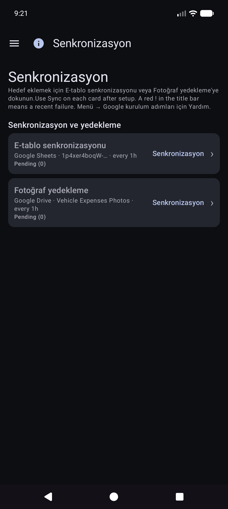

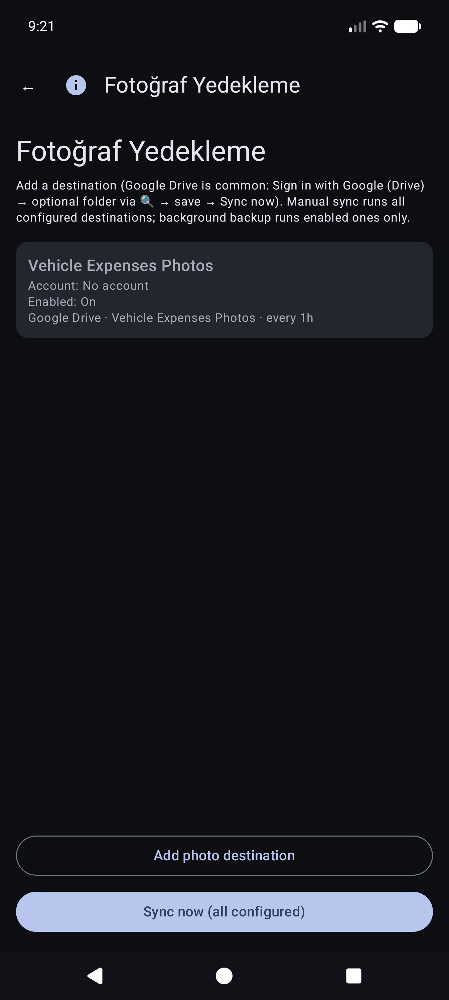

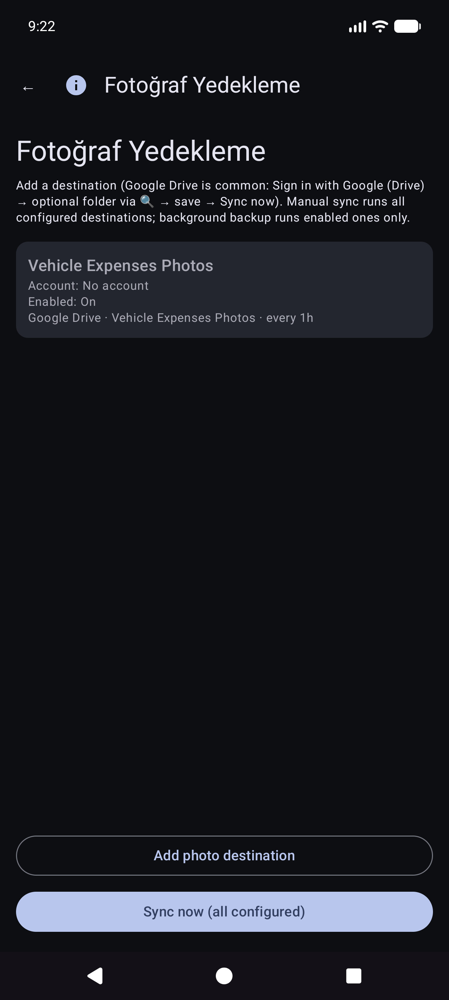
Fotoğraflar için manuel Şimdi senkronize et tam bir geçiştir; arka plan yedeklemesi genellikle yalnızca beklemedeki yüklemeleri belirli bir programa göre işler.
Bu, uygulamayı açtığınızda ana ekrandır.
Önce aracı seçmeniz gerekmez. Araçları Yönet'te araçlar yer işaretleri ayarlandığında, Hızlı Doldurma kilometre sayacını yakaladıktan sonra gösterge tablosu görüntüsünden hangi aracı otomatik olarak algılar. Gerekirse geçersiz kılmak için Araç açılır menüsünü yine de açabilirsiniz.
Kilometre sayacı modunda kalın ve kümeyi çerçeveleyin. Talimat: * Kilometre sayacını hedefleyin. Yakalamak için deklanşöre dokunun.*

OCR Odo'yu doldurur ve aracı yer işaretlerinden eşleştirmeye çalışır (gerekirse her ikisini de inceleyin). Yeniden çekim yapmak için ana düğme Yeniden Dene olur. Talimat okumayı özetler.
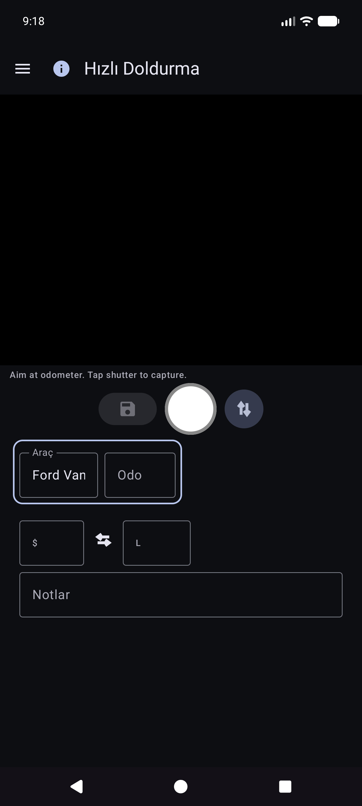

Bir sonraki durak için Hızlı Doldurma'da kalırsınız (alanlar kaydetmeden sonra temizlenir). Tamamen çevrimdışı çalışın; senkronizasyon yapılandırıldığında arka planda daha sonra çalışır.
Ekran ipucu (talimat satırının altında): Deklanşör = yakalama · Disk = kaydetme · ↕ = odo/pompa modu · ↔ = maliyet/hacim değiştirme.
Menü → Yeni gider.

Menü → Raporlar → Gider listesi — geçmiş yakıt dışı harcamalara göz atın; Düzenlenecek bir öğeyi açın.

Listeden bir satır açın. Satıcıyı, miktarı, kategoriyi, aracı ve açıklamayı doğru yapın. Makbuz yalnızca fotoğraf yedeklemesindeyse (okunabilir yerel dosya yoksa), gösterildiğinde Resmi arşivden getir seçeneğini kullanın (yapılandırılmış fotoğraf hedeflerinde çalışır).

Menü → Yolculuğu başlat (çekmecedeki Hızlı Doldurma işleminden sonra). Kilometre sayacını yakalayın veya girin, yolculuk türünü seçin, disk simgesiyle kaydedin. Durdur, tutulan GPS konumundaki Kişisel için bir kısayoldur. Kontrol hatırlatıcıları için ⓘ kullanın.

Yolculuk başlangıçları, Açma Türü (normal dolumlar değil) ile yakıt sıraları olarak saklanır. Yakıt Geçmişi altında değil, Raporlar → Yolculuk milleri altında görünürler.
Menü → Raporlar ürün merkezini açar (tüm zamanların özeti + katalog kartları). Bu, ürün raporlarının tek yüzeyidir; ayrı bir "Raporlar ve Grafikler" çekmecesi öğesi yoktur.
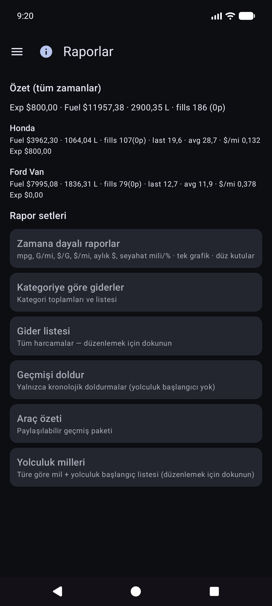
Araç modu (Tümü / Her Biri / Tekli), dönem filtreleri, grafikler ve paylaşım (METİN / CSV / PDF) için bir kart açın. Rapor edilen çocukların üst çubuğu: ☰ + ← (ve kayıtlı olduğunda ⓘ).
Ana harita kartı. Pürüzsüz kutular ve bağımsız Y ölçekleri (ekonomi solda; para ve seyahat aileleri sağda) ile isteğe bağlı ölçümler (mpg, G/mi gibi hacim/mesafe, $/G gibi birim fiyat, maliyet/mesafe, aylık $, yolculuk milleri, türe göre yolculuk yüzdesi).


Ekonomi matematiğinin ayrıntıları: REPORTS_METRICS.md.
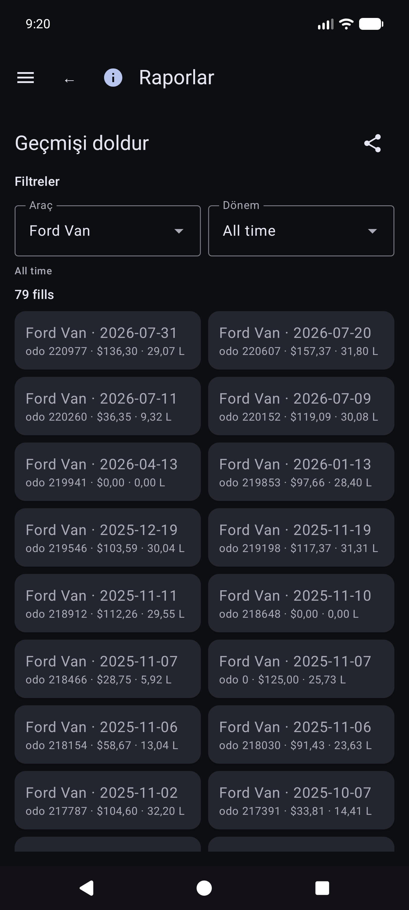
Raporlar → Yolculuk milleri — türe göre miller, grafikler ve kronolojik yolculuk başlangıç / bölüm listesi. Söz konusu satır için Dolguyu düzenle'yi açmak için gerçek bir başlangıca dokunun.

Dolum geçmişi, Yakıt Geçmişi veya Yolculuk millerinden bir dolum açın. Düzen: araç ve kilometre sayacı, maliyet öncesi para birimi, hacim, notlar. Yolculuk türü yalnızca satır bir yolculuk başlangıcı olduğunda görünür. Konumun bir özeti ve Konum ayrıntıları bulunur. Bulut kimliğine sahip yerel fotoğraf eksik: Arşivden görseli getir.
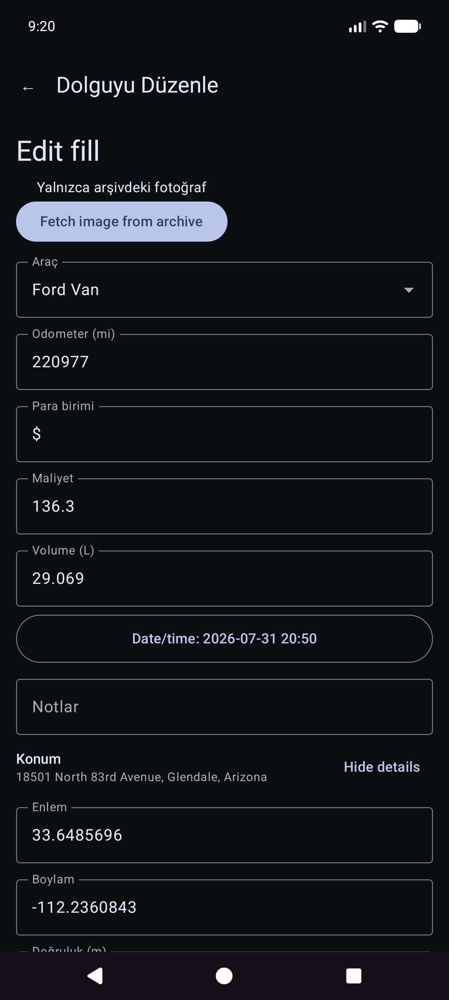
Diğer katalog kartlarında kategoriye göre harcamalar, araç özeti ve harcama listesi yer alır.
Para, ayarlandığında her satırın para birimini kullanır. Karışık para birimi toplamları para birimi başına alt toplamları gösterir (sessiz döviz dönüşümü yoktur).
Menü → Senkronizasyon e-tablo ve fotoğraf hedefleri için merkezdir (yalnızca Ayarlar altında gömülü değildir).
Menü → Ayarlar.


Hedefler için Menü → Senkronizasyon'u tercih edin. Ayarlar aynı listeleri açan özet satırlarını göstermeye devam edebilir.
CSV dışa aktarma/içe aktarma (Araçların ZIP'i / Giderler / Yakıt sekmeleri), mevcut yapı tarafından sunulduğunda Ayarlar'dan edinilebilir.
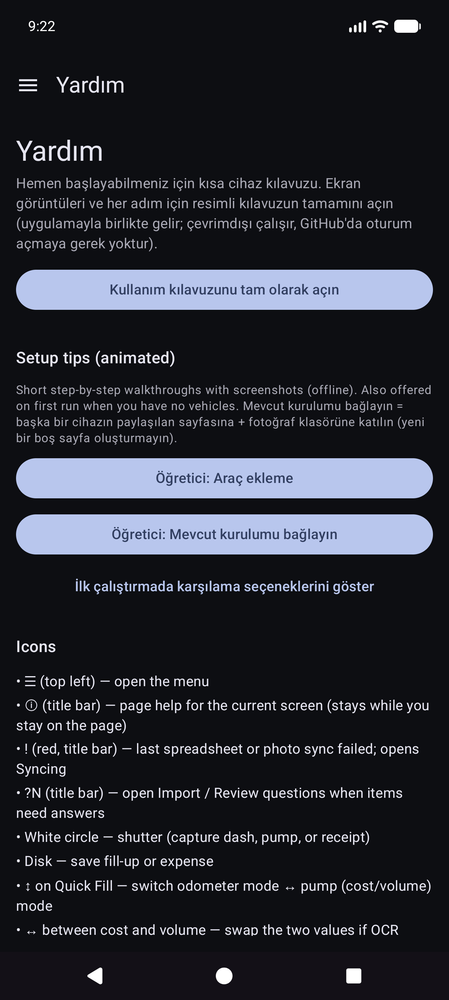
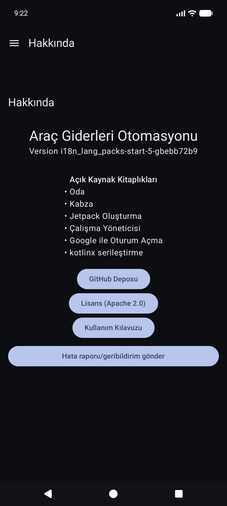